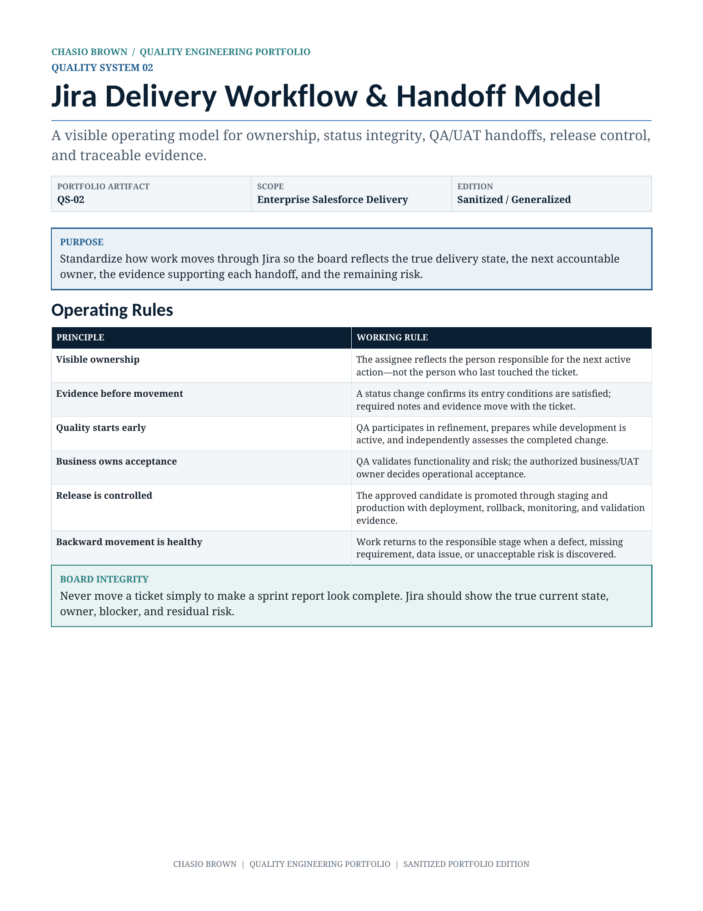

Jira Delivery Workflow & Handoff Model
A visible Jira operating model for status integrity, ownership, QA/UAT handoffs, release control, backflow, and traceable evidence.

What this demonstrates
- A 12-state story workflow with accountable ownership and clear status meaning.
- Explicit Developer-to-QA and QA-to-UAT handoff controls.
- A connected release workflow from Release Planning through Production Validation and closure.
- Healthy backflow rules for requirements gaps, QA defects, UAT issues, staging failures, and accepted risk.
Board integrity
Status represents verified evidence, not optimism. The assignee changes when responsibility changes so the board reflects the next active owner.
No silent handoffs
Build, environment, data, evidence, limitations, residual risk, and next-action ownership travel with the ticket rather than living only in chat.
Release control
A linked release record separates story completion from release authorization and makes candidate integrity, staging validation, rollback, monitoring, and production evidence visible.
Built to make quality operational.
This is a generalized portfolio adaptation of an enterprise quality operating model. Institutional names, logos, personnel, internal URLs, ticket identifiers, environment names, proprietary fields, and implementation-specific details have been removed or generalized.